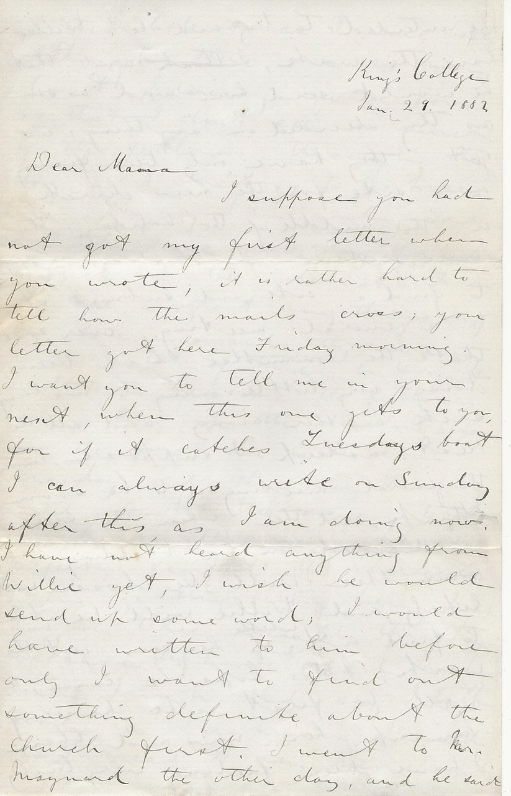

King’s College
Jan. 29, 1882
Dear Mama
I suppose you had not got my first letter when you wrote, it is rather hard to tell how the mails cross; your letter got here Friday morning. I want you to tell me in your next, when this one gets to you, for if it catches Tuesday’s boat I can always write on Sunday after this, as I am doing now.
I have not heard anything from Willie yet, I wish he would send up some word; I would have written to him before only I want to find out something definite about the Church first. I went to Mr. Maynard the other day, and he said he intended to try and let Willie have the work, and he would send him word as soon as they decided on anything: as yet they have only been fixing on a site for the new church, in the middle of the holidays the congregation chose a committee to find a site and submit it to a general meeting; ever since that the committee have been doing very little, owing to two being sick, another away, and all the rest asleep I suppose, however the general meeting is to be soon I think, and then when a site is decided on, a building committee will be chosen most likely, and Willie will be able to find out whether he can get the work; I do hope he can, it will be first rate having him up here now and then.
I have been feeling very lonely on the whole since I came back, although there are so many about, I daresay one reason is, that I don’t see so much of the fellows through the day, as I don’t go to lectures now. The way I am working now is, I take one whole day for each subject in the Gilchrist. There are a great many things going on here now, and they run away with a lot of time, but Lent will soon be on, the fellows are getting up the Readings again the first one is to be on Tuesday and then every Tuesday until Lent; they are going to make me do something every night, it is perfectly fearful the character I am getting here of being Irish, two or three seem to think because they have heard me read Irish I am Irish, and say I talk like an Irishman; I would not read it any more, only the fellows who are running the thing want me to, as it takes well.
At the second last one the two Harleys and I are going to give Box and Cox, this won’t be much trouble for me, as I have got the part pretty much in my head. A quadrille club has been started in Windsor, they came and asked me to join, and I at first thought I wouldn’t, but thinking it over, I decided I would, for by working all day steady, and taking my exercise that way at night, I will be able to do just as much as staying in at night, and only having a walk in the day, they meet once a week, on Wednesdays at the different houses; I was at the first one last Wednesday, Raven, Harley, Carvell, Greg, Macdonald and Wiggins (last two Windsor students) and myself are the students in it, then there is a fellow called Hobart, and nine ladies; it isn’t a bad sort of affair, one good point about it, is they break up early.
I think I told you a concert is being got up for the church, the principal thing in this is a sort of operetta called The Haymakers, in which there are about a dozen taking part, Raven amongst the number; last night I got a illegible from Miss Dimmock the prime mover in it, asking me to take a part, which they had thought of leaving out, but have just discovered is a principal feature in the whole thing; I am awfully sorry they have asked me, for it will be a complete nuisance, and waste a lot of time, but it will be hard to get out of it, for they will plead it is for the church; still I’ll do my best to squirm out of it.
The women are trying all manner of dodges for raising money, this concert, a bazaar in the spring, sending baskets of fancy work around Windsor to be peddled off, and every Saturday a whole stock of cakes, oyster stews etc., up here to be peddled amongst us, and then the mite society; it’s my opinion they squeeze quite a lot of money out of the college, and they are the very ones (the Windsor people) who are giving nothing to the Endowment fund, so they don’t deserve a cent from us.
Yesterday afternoon Frith and I had a snow shoe tramp, but the crust was rather too hard, and the snow not deep at all; it is snowing a little today, and I hope a good deal will fall. Some of the fellows go to the rink, but I don’t think I will go near at all; it’s a fraud of a place.
I was mad when I saw in your letter, that Sarah had not been near the Rink since we left; she is right crazy, tell her to read that piece in Matthew I was giving her a stave on, it is the last part of the XX in Ch. and you pack her off to the Rink as often as you can. I am going to write to Bob this evening.
You know it is the custom here to give a plum pudding on one’s birthday; a little while ago one of the fellows gave a third course (nuts raisins & oranges) instead of a pudding; this seemed to everyone a good idea, for it makes a real extra, while in the old plan Iocasta got out of giving her second course, by the birthday pudding (price from $2.00 upwards according to quality) appearing, now in the newer plan Iocasta’s full meal is consumed before the treat courses. Well I followed the new plan and found it hard in every way, for it was both a great deal cheaper, and was relished by all more; the fellows got quite merry over it, and drank my health in water singing “He’s a jolly good fellow” etc. which has never been done for a pudding yet.
The fellows were trying to get up a drive to Wolfville yesterday but it fell through. Raven is getting along fine now, everyone sees a great improvement in him; Miss Black said to me the other day that she thought that Charlottetown made a wonderful change in him having taken that English reserve from him that he was so full of at first.
I have fixed up a few more things about our room since I came back, and it is now quite cozy; in my opinion there isn’t another room in college that can touch it at all. Tell Papa that I framed those sketches of Bob’s in the way he wanted me to; blue blotting paper I used and everyone who comes into the room admires them; they look very pretty, and I am quite proud of them.
With love to all and kisses to the youngsters I remain your loving son E.A. Harris